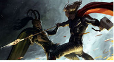

电影影评网


- 《敢死队》
今天看了全天唯一一场原声的《敢死队》。有好事者统计，这群肌肉大叔的年龄加起来是439岁
平均年龄超过了50岁，其中岁数最大的史泰龙64岁，岁数最小的杰森·斯坦森也有38岁，堪称老
男人团。一帮纯爷们拍出的电影，当然是没有什么剧情，从头劲爆到尾。旁边有个陌生的软妹睡
死过去。全场的男性都异常亢奋。廉颇老矣，尚能饭否。当然是宝刀未老了。史泰龙全程曾哥附体......
-
- 大众评分：
- 媒体评分：
- 网站评分：
- 《赤焰战场》
这部电影的最大意义在于一群廉颇老矣的明星向观众做了一个集体性的道别。他们以后或许还会各自为战地奋斗在荧屏之上，但如此
集中的出现在一部电影中就显得几乎不再可能。布鲁斯·威利斯已经56岁，海伦·米伦66岁，约翰·马尔科维奇58岁，摩根·弗里曼已经74
岁，布莱恩·考克斯65岁。这些年纪已经超过或者进花甲的曾经叱诧荧屏的人物正在渐渐地逝去，如同那一抹灿丽的......
-
- 大众评分：
- 媒体评分：
- 网站评分：
- 《雷神》
自《钢铁侠》开始，全球最负盛名的惊奇漫画电影公司走上了不断致力于在特效技术上开拓创新的发展道路。本着以集合旗下所有
英雄漫画形象，打造一个“惊奇电影宇宙“的核心发展观，不断推出艺术造诣低下，剧情肤浅，但场景华丽、极致炫目的”超级英雄”大片
《雷神》也是如此。尽管常被影评人打......
-

- 大众评分：
- 媒体评分：
- 网站评分：